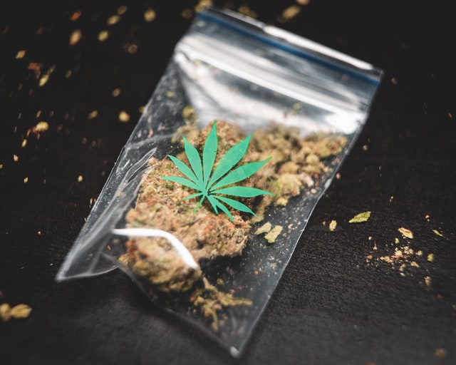

Seven Reasons to Outlaw Recreational Drugs
The main arguments
This is the second part of an article on drug legalisation. Please find the first part here. A podcast and Youtube video on the topic are also freely available!
Should we legalise recreational drug use? The main arguments against legalising recreational drugs are:
- The escalation argument: one drug leads to another, and the doses rise over time.
- Gateway drugs: “soft” drugs are gateways into drug use that invariably lead to the consumption of stronger and more dangerous drugs.
- Addiction is itself dangerous, both in a medical and in a social context.
- The war on drugs seems (sometimes) to work better than drug legalisation.
- No one should be taking drugs for ethical reasons.
- There is a moral obligation for all people to take care of themselves and their health.
- Drug users are not free in their decision to take drugs or not, and must therefore be guided and protected by the state.
If you like reading about philosophy, here's a free, weekly newsletter with articles just like this one: Send it to me!
Debate overview: Legalising recreational drugs
Historical context
Before the 20th century, drugs were generally not regulated and even states engaged officially in drug trade (see, for example, the Opium Wars between Britain and China).
In the 1906 Pure Food and Drug Act, the US introduced controls for many drugs considered addictive and/or dangerous. This was part of a more general trend in US society towards safeguarding “Christian” values that had started in the 19th century and included the prohibition of alcoholic drinks that was put into law from 1920 to 1933.
For more on the debate on legalisation vs decriminalisation of drugs and the different kinds of drugs, please go back to the first part of this article.

Should we legalise recreational drug use or not? This article explains the most important six arguments in favour of the legalisation of recreational drugs.
Seven best arguments against legalising recreational drugs
1. The escalation argument
Escalation means that one does not stay at a particular level of drug consumption; instead, the consumer of a drug tends to increase the amount taken over time.
Escalation is often linked to tolerance, the mechanism by which the body gets used to a drug, needed more and more of the drug over time to achieve the same effect. One can easily observe tolerance with smells: in a neutrally smelling room, even a small drop of peppermint or rose oil with be immediately noticeable. After a while, though, the body will get used to that smell, and a higher dose will be needed to produce the same subjective impression.
But escalation and tolerance are really different mechanisms. Escalating drug use is a behavioural chance that works separately from the biochemical tolerance of the body to a particular drug.
That escalation is not only a myth can be shown with animal experiments. Interestingly, rats in experimental setups tended to increase their drug use over time for all drugs except nicotine and alcohol. This might support an argument for the existing different treatment that our societies allow for nicotine and alcohol, compared with other drugs like opiates and cocaine.
Also: “Intriguingly, as revealed by a metaanalysis of the literature …, the severity of drug intake escalation appears to be higher with opiates (heroin, morphine, fentanyl) than with stimulants … . This relatively unexpected finding may suggest that opiates have a higher “dependence liability” than stimulants. Further comparative research is needed to confirm this interpretation.” [1]
Apart from all the technical details, the escalation argument is important to the discussion about legalising drugs. If it is true that drug users tend to consume more and more of a drug over time, then this means that it will be, in the long run, impossible for them to function normally in society and to respond to the demands of family, job and their social environment.
2. Gateway drugs
Another, different aspect of the escalation argument is the escalation to different drugs, rather than only the increase in the amount consumed. This is meant when some softer drugs are called “gateway drugs.” Taking these drugs acts as a “gateway” to harder drugs. The concept of gateway drugs provides a reason to regulate or outlaw drugs that, in themselves, don’t pose a great risk to their users (like marijuana).
The argument that some drugs act as gateway drugs is disputed and the truth is probably complex.
On the one hand, around 45% of users of cannabis go on to later use other illegal drugs. This seems to support the gateway drug theory [3].
On the other hand:
If you look at it based on these data, then alcohol and cigarettes should also be classed as gateway drugs. Caffeinated drinks consumption has also been shown to be correlated with a higher probability of later cocaine use [4], so it seems that almost every legal drug would have to be considered a gateway drug. This makes the concept of gateway drugs very questionable.
Photo by Wil Stewart on Unsplash
3. Addiction dangers
Another argument against legalising recreational drugs is the danger associated with their consumption. Some immediate dangers, depending on the drug, could be loss of inhibitions, aggressive and dangerous behaviour, tiredness, disorientation and loss of consciousness, damage to the body, and mental issues like anxiety, or, in severe cases, psychotic episodes [5].
Drug legalisation advocates could reply that, first, legal drugs like alcohol and coffee can cause similar effects. In fact, around 88,000 people die of alcohol-related causes every year in the US, and alcohol was involved in 31% of traffic fatalities. Drug overdoses killed around 63,000 US Americans in 2016, so the numbers are comparable.
In addition to these immediate effects, addiction itself poses a danger to one’s life. Some drugs are more, some less compatible with leading a “normal” human life. Addiction may interfere with one’s duties at work, either directly (drivers, sports professionals) or indirectly, by taking up a lot of time and energy, disrupting sleep, or driving the addict into poverty and out of normal society.
Of course, one can dispute how much of these effects is due to the drug itself and how much is a direct consequence of these drugs being illegal.
For example, the high price of some drugs, that might drive their users into poverty, is probably related to the fact that these drugs are illegal. A regulated, legal trade of these drugs might lead to a situation where they would occupy a place similar to coffee, sugar or alcohol in our lives and where even being addicted to them would not threaten one’s function in society. But clearly this is only the case with some of the currently illegal drugs. The regular consumption of hallucinogenic drugs, for instance, will probably interfere with everyday life to some extent.
Finally, there is an association of illegal drugs with crime. Again, this might be, to some great extent, due to the fact that these drugs are made illegal. If they were legalised, the criminals who now distribute them might lose interest in them and focus on other crimes instead. But as the situation is now, taking illegal drugs necessarily results in contacts with criminal organisations.

Photo by GRAS GRÜN on Unsplash
On a related note, there is a social stigma in taking drugs and in being addicted to drugs, that also interferes with one’s optimal functioning and flourishing in society. That stigma is not so clearly related to the illegality of drugs. For example, coffee consumption is seen in our societies as virtuous, because it tends to increase the addict’s productivity and to promote society’s values. In contrast, being an alcohol addict is seen as negative, even though alcohol consumption is legal. Sugar addiction, although perfectly legal, is not in itself stigmatised, but being overweight as a consequence of this addiction, is. Game addiction is generally perceived as worse than nicotine addiction, and so on. The social stigmatisation mechanisms are complex and not at all straightforward, having also to do with religious beliefs, cultural icons, nutrition and lifestyle trends and many other factors.
4. The war on drugs is working
This is, again, a disputed point.
But there are also counterexamples where liberalising drug legislation has led to the illegal drug trade taking over, for example in the Netherlands.
Legalising the consumption of marijuana has led to increased “drug tourism” from neighbouring countries. Due to the lax enforcement of drug laws, the Netherlands have become a major drug manufacturer and exporter [6]. And rising drug cartel crime, including executions of lawyers and journalists, has led to public questioning whether the country is becoming a narco-state [7].
So there might be an argument there that keeping drugs illegal and enforcing drug laws may prevent drug cartels from expanding their influence over society. But there are examples from other places (Portugal is often mentioned in this context [8]) where the liberalisation of drug laws seems to have worked better. So probably, again, the effect of liberalisation is likely to be a complex issue that makes predictions difficult.
Photo by Edgar Laureano on Unsplash
5. No one should take drugs
Apart from the empirical side of whether the war on drugs works or not, there are also moral arguments in favour of both legalising and prohibiting drug use.
One such argument could be that actually no one should want to take drugs in the first place, at least not drugs that interfere with consciousness and clarity of mind in a negative way.
There are at least three reasons for this:
-
Productivity: The use of some drugs interferes with clarity of mind or causes the user to become lethargic, tired, demotivated and unwilling or unable to take part in normal everyday activities, especially those that require long-term attention and mental focus. This reduction of human productivity can be said to be a morally bad thing. Human society is based on the principle that every one has to contribute according to their abilities and that every person must hold up their end of the bargain, in order for all to prosper. Drug addicts can be said to profit from society and its infrastructure without themselves contributing as much as they could to it if they did not take drugs. This can be said to be morally wrong, in a similar way as withholding taxes is morally wrong.
-
The welfare of society: Every one of us is required to act as much as possible in furthering the interests of society, by being a good citizen, a good neighbour and friend and a good family member that benefits others. Some drugs are known to cause violent behaviour, others to reduce inhibitions, others to cause disorientation or to interfere with one’s proper functioning in these social roles. This argument, of course, would apply to alcohol and tobacco too, the use of which is also sometimes conflicting with the welfare of society. Drunk football “enthusiasts” that violently attack the fans of the other team at a world-cup game, or drunk drivers who endanger the lives of others, are, in this view, no better than any violent heroin addict. Still, one could sensibly argue that society can expect of us to behave as well as we can, since we are also benefiting from it at every moment of our lives. In the present situation, a drug user is not only in danger of themselves acting in anti-social ways, but they are also actively supporting criminal organisations and the world-wide drug trade, which is the morally wrong thing to do.
-
A clear mind: One could make an argument that a clear mind and an unobstructed view of reality and truth are valuable in themselves. This is why we consider deception, even self-deception, to be bad. We talk of eradicating fake news and wrong-headed conspiracy theories. We pity those who cannot see themselves clearly and who are deluded, creating their own, wrong version of the truth about their own lives. In extreme cases, we refer such people to psychologists and psychiatrists, since the loss of reality, if it is severe enough, can be a pathological condition. This would be an argument especially against drugs that cause a distorted perception of reality, from mood-enhancers to hallucinogens. It would apply less to coffee, sugar and tobacco, which don’t seem to interfere much with one’s clarity of mind.
Amsterdam. Photo by Azhar J on Unsplash
6. The moral obligation to take care of oneself
On a related note, one could argue that there is a moral obligation of every person to take care of themselves and their health.
Traditionally, this had been justified by reference to religion (“One’s body is the temple of God”, going back to 1 Corinthians 6:19-20). But there are other ways to justify such an imperative:
-
Being physically healthy enables one to take on and fulfil one’s duties to society. This could be seen as a Kantian approach and is, essentially, a variant of the arguments in the previous section.
-
Being unhealthy because of one’s neglect of one’s health incurs costs. These costs society collectively has to bear through the use of its health infrastructure, health insurance, the need to educate more doctors, and so on. For similar reasons, we require people to vaccinate against Covid-19 and other diseases, and why we consider overly dangerous sports (for example, BASE jumping or wingsuit flying) to be anti-social.
-
One might argue, following Aristotle or Martha Nussbaum that humans strive towards some form of fulfilment in life, a state of affairs that we can objectively recognise as good and valuable. A state like that, which Aristotle calls eudaimonia, includes that one is able to use all of one’s virtues and strengths in order to fully realise one’s potential as a human being. Clearly, some drugs will interfere with this full realisation of an addict’s human potential — and thus taking such drugs would be morally wrong.

Martha Nussbaum and the Capabilities Approach
In the capabilities approach, philosopher Martha Nussbaum argues that a human life, in order to reach its highest potential, must include a number of “capabilities” – that is, of actual possibilities that one can realise in one’s life.
7. Drug users are not free to decide
An argument often presented in favour of drug legalisation is that we need to respect the freedom of drug users to choose for themselves how they want to live their lives. Nobody should tell a drug user to not take a drug, the argument goes, because the autonomy of the individual is one of the highest goods.
This argument, though, does not consider that drug users often are not free to choose whether to consume the drug or not. It is part of the very nature of addiction that the addict is not free to rationally choose to take or not to take the drug. Instead, addicts are being forced by the physiological or psychological mechanisms of addiction to reach for the drug to which they are addicted. Therefore, the drug user’s autonomy has already been compromised and negated by the drug itself, and helping them (if necessary, by coercion) to overcome their addiction, actually restores their freedom and autonomy, rather than harming it.

Surveillance, instead of forcing citizens to behave more ethically, in reality undermines the essence of morality. According to Immanuel Kant as well as the Bible, the free human choice is the basis for all moral behaviour.
The observation behind this idea is that few addicts really would choose to be addicts if they were not already addicted. One can observe this in smokers who endlessly try to smoke less or to give up smoking, in addicted alcohol consumers who frequent AA meetings and so on. Clearly, there is a strong tendency of addicts to attempt and escape their addiction. The fact that many fail at that does not show that they want to be addicted, but that they actually have no choice. Drug prohibition and enforcement of no-drug policies can help these users to finally get rid of their addiction.
This effect has clearly been observed in regard to smoking: smoking bans clearly reduce smoking-related diseases in populations and they also reduce the numbers of smokers. [9]. Wikipedia has a lot of evidence on these processes.
Conclusion
All in all, this is a very difficult and complex topic and the argumentation is often influenced strongly by commercial and political interests.
Political parties and governments have their own agendas (as in the US “war on drugs”), which often have nothing to do with the issue itself. The “war on drugs,” for example, has been used by earlier US governments to discredit hippie culture and the Vietnam war critics. Drug companies, on the other hand, from breweries and sugary soda manufacturers to the big tobacco companies to the makers of medical drugs like OxyContin, also have their own agendas, which, through research funding and lobbying, can also sometimes become state policy. Religious groups, drug addiction support groups, independent-minded advocates of libertarian policies, all have their own opinions and interests and it is very difficult to even agree on some of the crucial facts, for example whether “gateway drugs” exist and what their true effects are.
This article and the previous one hopefully provided a useful overview of the main points in that debate — but it is not likely that we will know the truth about the effects of particular drug legislation policies any time soon.
◊ ◊ ◊
Thanks for reading! Here is a relevant episode from the Accented Philosophy podcast to listen to:
Notes
[1] https://veteriankey.com/escalation-of-drug-use [2] https://www.drugabuse.gov/publications/principles-adolescent-substance-use-disorder-treatment-research-based-guide/introduction
[3] Wikipedia: https://en.wikipedia.org/wiki/Gateway_drug_effect
[4] “Energy drinks and risk to future substance use”. www.drugabuse.gov. National Institute on Drug Abuse. 8 August 2017.
[5] https://www.nhs.uk/mental-health/conditions/psychosis/causes/
[6] https://www.dw.com/en/netherlands-the-possible-consequences-of-liberal-drugs-policies/a-51474578
[7] https://www.bbc.com/news/world-europe-50821542
[9] Evans, et al. (1999). “Do Workplace Smoking Bans Reduce Smoking?” (PDF). The American Economic Review. 89 (4): 728–747. doi:10.1257/aer.89.4.728. JSTOR 117157. S2CID 153512752.
Cover image by GRAS GRÜN on Unsplash